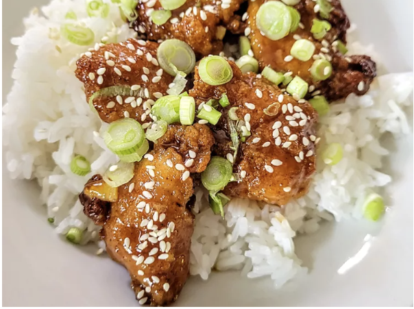

Orange Chicken

Description
This 4-ingredient orange chicken made with frozen chicken tenders is great for when you are craving takeout. I serve it over rice, topped with green onions and sesame seeds.
Ingredients
- 1 cup orange marmalade
- 1/2 cup Kansas City-style BBQ sauce
- 1/2 cup Kansas City-style BBQ sauce
- 1/2 cup Kansas City-style BBQ sauce
- 1/2 cup Kansas City-style BBQ sauce
- 1/2 cup Kansas City-style BBQ sauce
Steps
- Preheat the oven to 400 degrees F (200 degrees C). Place frozen nuggets in a single layer on a baking sheet.
- Bake in the preheated oven until hot and crispy, 11 to 13 minutes, or according to package directions.
- Meanwhile, whisk marmalade, BBQ sauce, and soy sauce together in a small saucepan and heat over low heat until hot, about 5 minutes.
- Place nuggets in a large bowl. Drizzle sauce over the top. Toss to coat.
Home